Cachly on CarPlay
Cachly's CarPlay integration brings the full geocaching experience to your vehicle's dashboard, allowing you to search for caches, navigate to them, and even log your finds — all while keeping your eyes on the road.
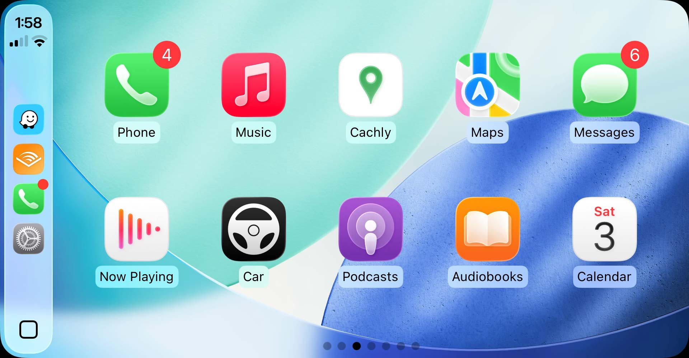
Getting started
When you connect your iPhone to a CarPlay-compatible vehicle, Cachly will appear on your CarPlay dashboard. Simply tap the Cachly icon to launch the app.
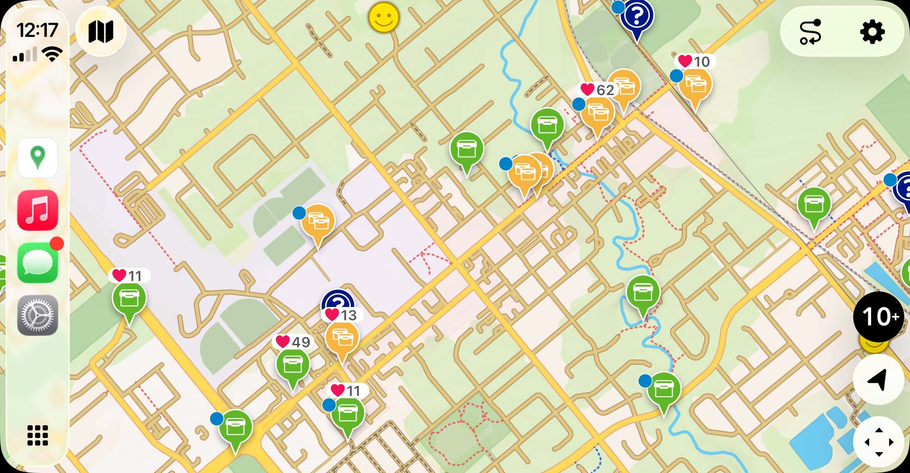
Upon first launch, you’ll see the main map view centered on your current location. The map will automatically begin loading nearby geocaches if you have an active internet connection.
Requirements
- iPhone with iOS 14 or later
- CarPlay-compatible vehicle or head unit
- Active Cachly Pro subscription
- Internet connection (for live cache searching) or pre-downloaded Trips (for offline use)
Cachly icon not showing in CarPlay
Cachly should be added automatically to CarPlay, but if you are not seeing the Cachly icon go to iOS Settings › General › CarPlay and choose your car. Next go to Apps, scroll to the bottom and add Cachly as an included app.
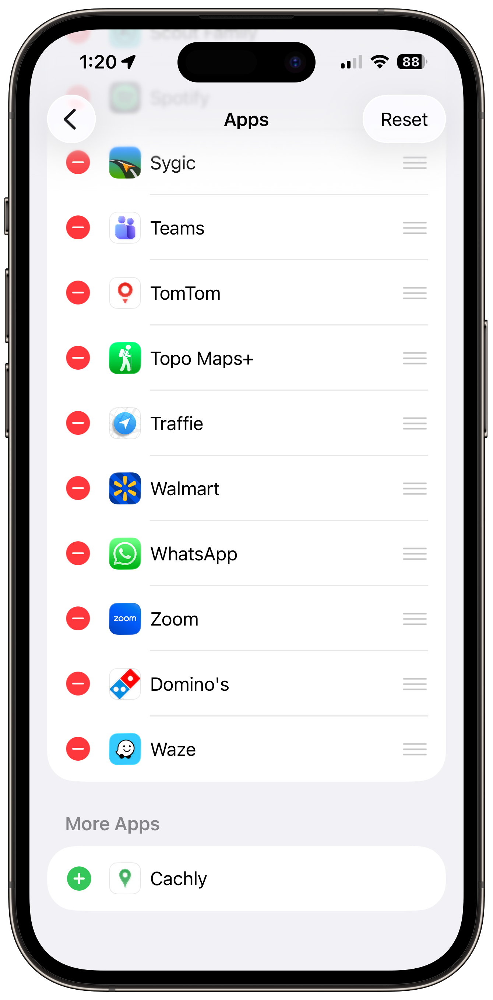
The CarPlay map
The CarPlay map is your primary interface for discovering geocaches while driving. It displays geocache locations as pins with icons indicating the cache type and cache titles at higher zoom levels.
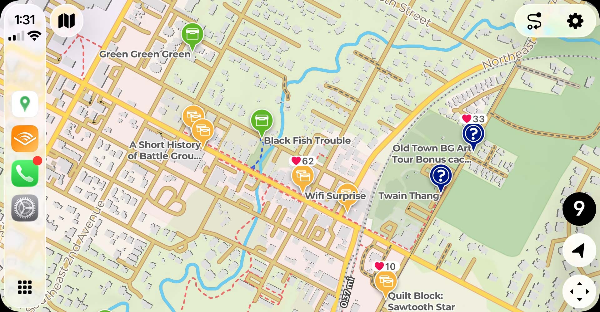
Map controls
The map includes several control buttons:
| Button | Function |
|---|---|
| + | Zoom in one level (see below for screenshots) |
| − | Zoom out one level (see below for screenshots) |
| Location Arrow | Center map on your current location |
| Cache Count | Shows number of visible caches (displays “10+” when more than 10) |
| Panning | Shows the CarPlay panning interface (see below for screenshots) |
| X clear | Clears caches from a loaded trip |
Understanding the map display
- Cache Pins — each geocache appears as a pin with an icon representing its cache type (Traditional, Multi, Mystery, etc.)
- Favorites: cache pins will show favorites count for caches that have 10 or more favorite points.
- Cache Labels — when zoomed in sufficiently (zoom level 14+), cache names appear next to their pins
- Your Location — a blue dot shows your current position when the map is not following your location, and a direction-of-travel icon when it is.
Zoom in/out and panning the map
- Most CarPlay systems only support panning and zooming by using the UI buttons.
- Some new CarPlay systems on iOS 26 support zoom and rotating by pinching and zooming.
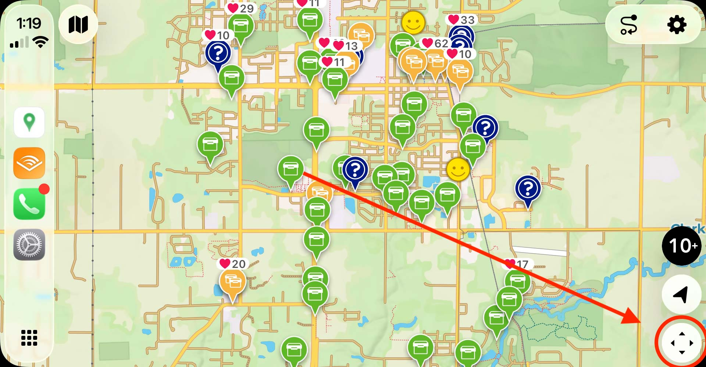
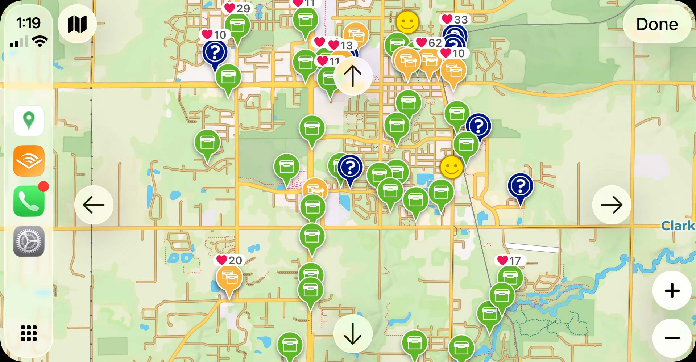
Map behavior
- The map automatically refreshes and loads new caches as you drive
- Caches load when you’re zoomed in to at least level 12
- If you’re zoomed out too far, you’ll see a message asking you to zoom in
Browsing geocaches
Viewing the cache list
Tap the cache count button (showing the number of visible caches) to open a list view of all geocaches currently on the map.
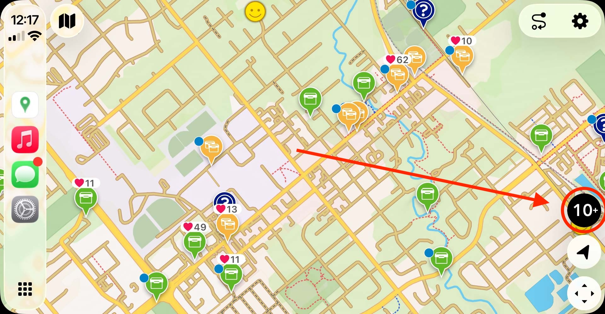
Each cache in the list displays:
- Cache Name — the title of the geocache
- Distance — how far the cache is from your current location
- D/T Rating — Difficulty and Terrain ratings
- Size — container size (Micro, Small, Regular, Large, etc.)
- GC Code — the unique geocache identifier
- Favorite Points — shown with a heart symbol (♥︎)
- Highlight Color — if you’ve assigned a highlight color to the cache, it appears as a colored circle
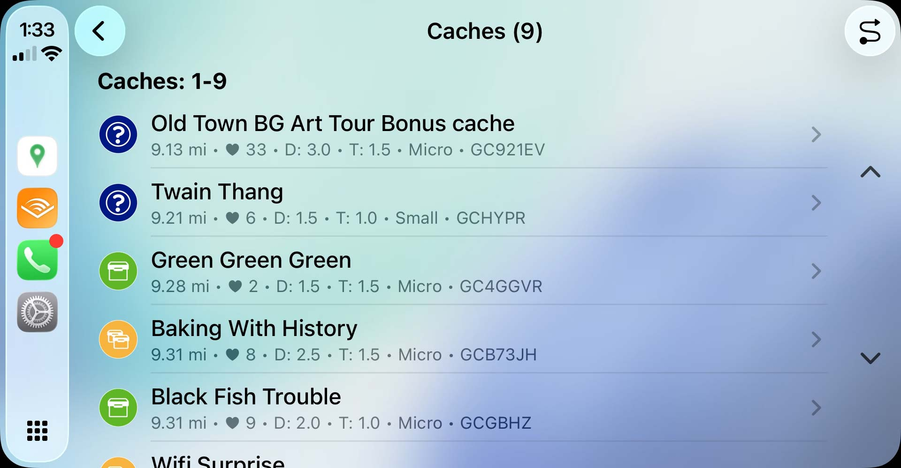
Viewing cache details
Tap any cache in the list to view its details:
- Difficulty/Terrain/Size — core cache attributes
- Favorite Points — community rating
- GC Code — for reference
- Placed By — cache owner’s username
- Placement Date — when the cache was published
- Distance — live-updating distance from your location
From the details screen, you can:
- Navigate — start navigation to this cache
- Log Cache — record your find using voice
- Hint — view the cache hint (if available)
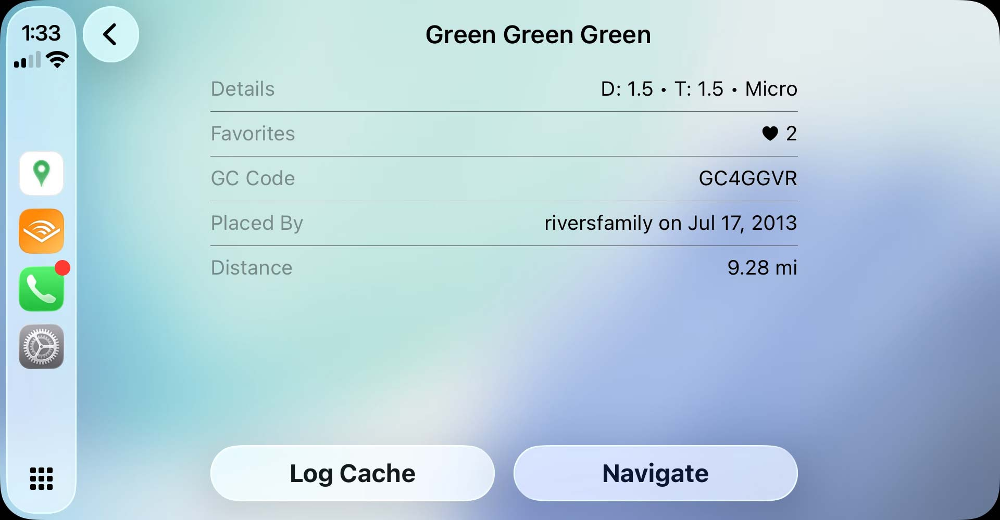
Cachly Intelligence summaries
With Cachly Intelligence enabled, the cache details screen gains a sparkle button in the top bar. Tap it and choose Summarize Description or Summarize Logs — Cachly generates a concise AI summary and reads it aloud, so you get the gist of a long description or the latest finder activity without taking your eyes off the road.
Using Trips (offline lists)
Trips are offline lists you’ve created and saved offline in the Cachly iOS app. They allow you to browse and navigate to geocaches without an internet connection.
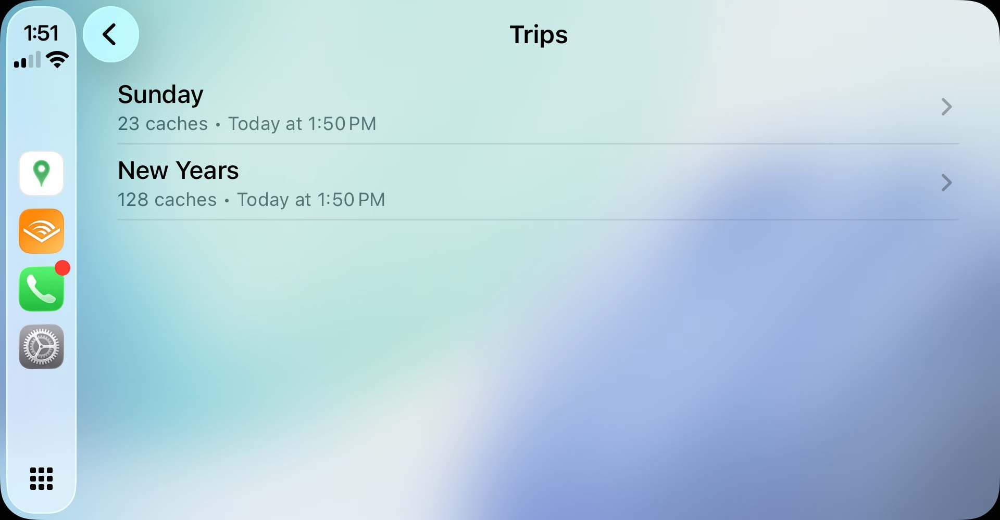
Setting up Trips for CarPlay
Before your Trips appear in CarPlay, you must enable them in the iOS app:
- Open Cachly on your iPhone
- Tap the Trips tab (car icon) in the Lists section of Cachly
- Tap + to create a new Trip list
- Copy or add caches from the Live tab or other offline lists
- Optionally, arrange the sort order of your lists
Browsing Trips in CarPlay
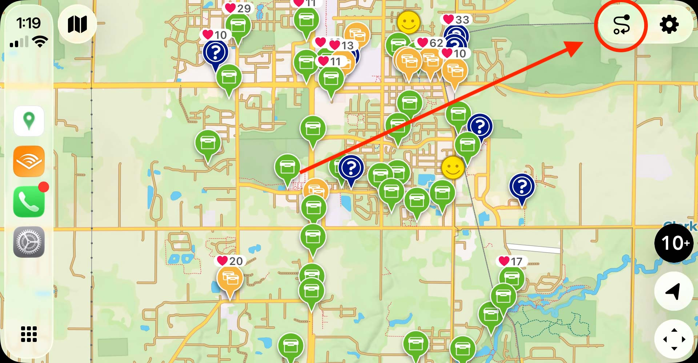
- From the main map, access the menu by tapping the trips menu button
- Browse your available offline lists
- Each Trip shows:
- List name
- Number of geocaches
- Last updated date
- Tap a Trip to view its caches
- Select the Show on Map icon to display all caches from that Trip on the map
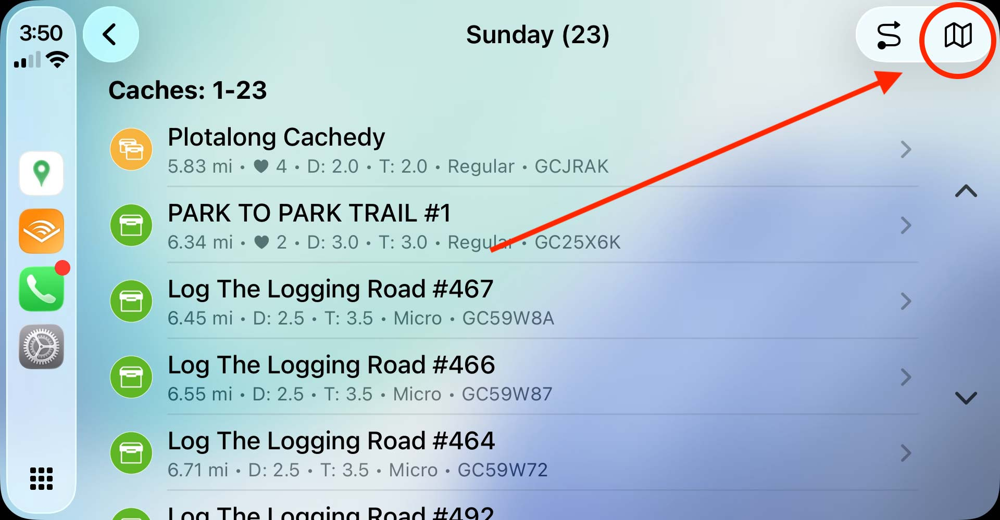
Custom sorting
You can sort caches within a Trip two ways:
- By Distance — caches sorted by proximity to your current location (default)
- Custom Order — respects the manual sort order you’ve set in the iOS app
To change sorting, go to Settings › Sorting in CarPlay.
Navigating to geocaches
Cachly supports multiple navigation options to guide you to geocaches.
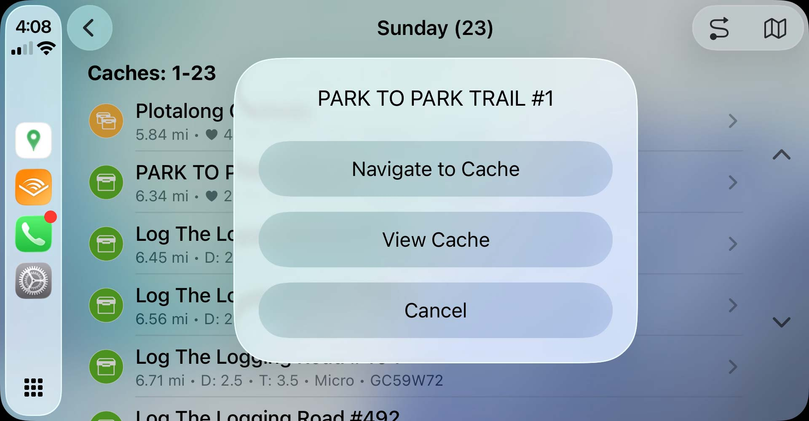
Starting navigation
- Select a geocache from the list or cache details
- Tap Navigate
- Choose your preferred navigation app (if not set as default)
Navigation apps
Cachly supports the following navigation options:
- Pro Offline Maps — Cachly’s built-in navigation using downloaded offline maps
- Apple Maps — opens Apple Maps with directions
- Google Maps — opens Google Maps (must be installed)
- Waze — opens Waze (must be installed)
- TomTom Go — opens TomTom Go (must be installed)
You can set your default navigation app in Settings › Navigation. The first time you navigate, Cachly shows the full list of options; after that it uses your saved default.
During navigation using Pro Offline Maps
When navigating to a geocache using offline maps:
- A navigation line shows the direct route to the cache
- The map tracks both your location and the destination
- An information panel shows the cache name and details
- You can log the cache or proceed to the next cache in your route
- The geocache will show on your iOS device
Starting navigation from iPhone
You can start navigation from the Cachly iOS app while connected to CarPlay:
- Open a geocache in the iOS app and browse to the navigate screen
- Tap the action … button and choose Pro Offline Maps
- CarPlay will automatically begin navigating to that cache
Multiple cache routes
Plan a geocaching route with multiple stops directly from CarPlay.
Creating a route
- Open the cache list (tap the cache count button)
- Tap the route button to enter selection mode
- Tap each cache you want to include in your route (checkmarks appear)
- Tap the navigate button to start your route
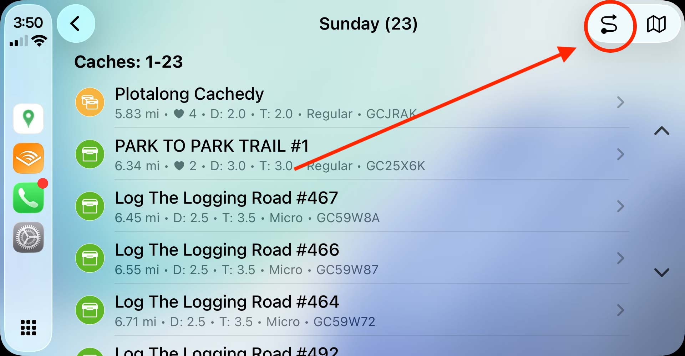
Following a multiple cache route using Pro Offline Maps
During multiple cache navigation:
- The screen shows which cache you’re navigating to (e.g., “1 of 5”)
- After arriving at or logging a cache, tap Next to proceed to the next cache
- The route automatically cycles back to the first cache when you reach the end
- You can log each cache as you visit it
Voice logging
Log your geocache finds hands-free using voice recognition — perfect for when you’re back in the car after finding a cache.
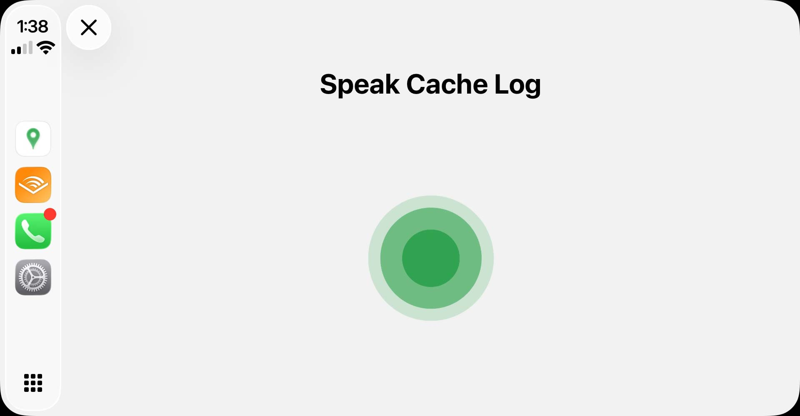
How to log a cache
- While viewing a cache or navigating, tap Log Cache
- Select your log type:
- Found It — you found the cache
- DNF — Did Not Find
- Write Note — add a note without logging a find
- Attended — for Event caches
- Will Attend — for upcoming Event caches
- Webcam Photo Taken — for Webcam caches
- Speak your log message when prompted
- Review your message (tap Review Message to hear it read back)
- Tap Send Log to submit or Save Log to save as a draft
Voice settings
Customize voice logging in Settings › Voice:
- Include Voice Before Template — adds your spoken text before any log template you’ve set up in the iOS app
- Skip Voice Input — quickly log without speaking (uses your template only)
Log templates
CarPlay respects the log templates you’ve configured in the iOS Cachly app. Your voice message can be combined with these templates for consistent, detailed logs.
Offline logging
If you don’t have an internet connection when logging:
- Your log is automatically saved as a draft (Field Note)
- Sync your drafts when you’re back online using the iOS app
Proximity alerts
Cachly can alert you when you’re approaching a geocache while driving.
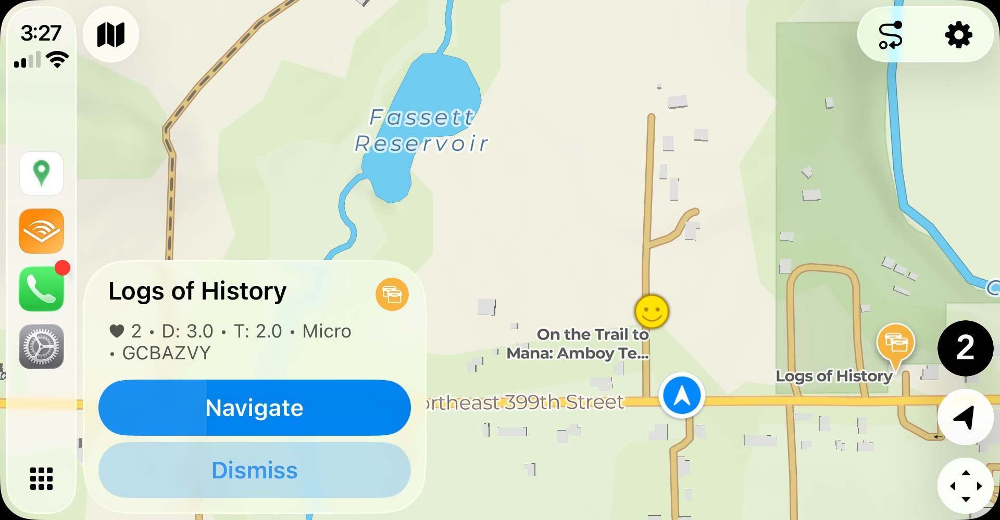
How alerts work
- When you come within 300 meters of a geocache, an alert appears
- The alert shows the cache name, type, and basic details
- You can dismiss the alert or tap to navigate
- Alerts only trigger while your vehicle is moving
Alert settings
Configure alerts in Settings › Alerts:
- Show Upcoming Alert — enable or disable proximity alerts
- Alert Only Favorited 2+ — only show alerts for caches with 2 or more favorite points (helps focus on higher-quality caches)
Alert limitations
Alerts will NOT appear:
- For caches you’ve already found
- For caches you own
- For a cache you’ve already been alerted about during this session
- While actively navigating to a cache
- When your vehicle is stationary
Offline maps
Use downloaded vector maps for navigation without an internet connection.
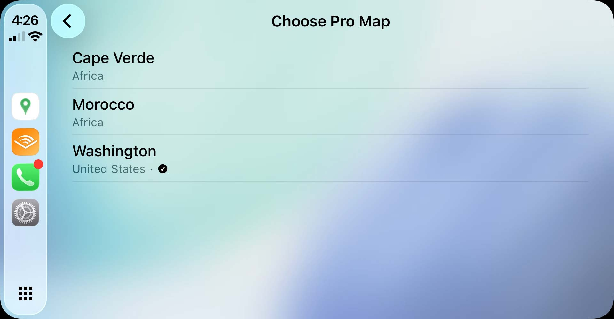
Setting up offline maps
- Download offline maps in the Cachly iOS app first
- In CarPlay, tap the maps icon on the top left of the map screen
- Select the offline map you want to use
- The map will update to use your selected offline map
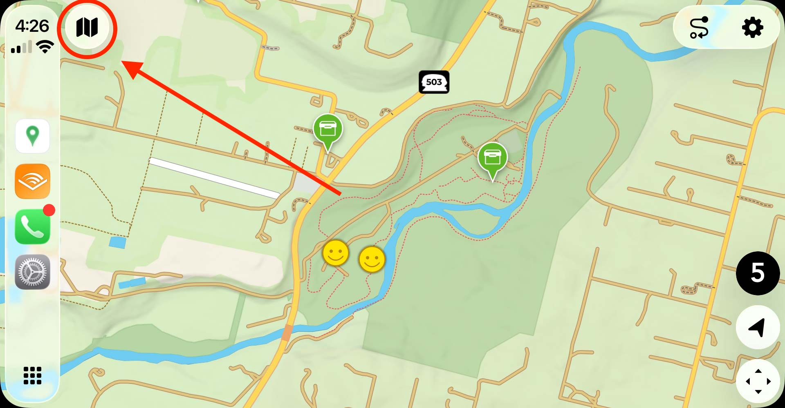
Offline map display
- Shows map name and country/region
- Use the list to switch between downloaded maps
- Pro Offline Maps navigation uses these downloaded maps
CarPlay settings
Access settings from the main menu to customize your CarPlay experience.
| Section | Options |
|---|---|
| Filtering | Use Filter Options From iPhone — sync filters with your iOS app settings. Exclude My Finds — hide caches you’ve already found. Exclude My Hides — hide caches you own. |
| Voice | Include Voice Before Template — prepend voice input to your log template. Skip Voice Input — log without voice recording. |
| Navigation | Pro Offline Maps — use Cachly’s built-in navigation. Apple Maps — use Apple Maps for navigation. Google Maps — use Google Maps (if installed). Waze — use Waze (if installed). TomTom Go — use TomTom Go (if installed). |
| Map Options | Map Orientation — North Up keeps north at the top, Follow Course rotates the map to your direction of travel. Show Compass — show a compass on the map. Show Speed and Altitude — show a live speed and altitude readout on the map. Map Style — Automatic, Light or Dark; this also switches the whole CarPlay interface between light and dark appearance. |
| Alerts | Show Upcoming Alert — enable proximity alerts. Alert Only Favorited 2+ — only alert for highly-favorited caches. |
| Pin Type | Pin Type 1, 2, or 3 — choose your preferred visual style for cache pins. |
| Sorting | Distance — sort caches by distance from you. Custom — use your manual sort order from the iOS app. |
Integration with the iOS app
CarPlay works seamlessly with the Cachly iOS app on your iPhone.
Trips synchronization
- Create and manage Trips in the iOS app
- Arrange Trip order in the iOS app to control CarPlay display order
- Download caches for offline access before your trip
Custom sort order
To use custom sorting in CarPlay:
- Open an offline list in the iOS app
- View the offline trip, choose the sorting icon on the lists screen, then choose Custom in sort types and manually arrange caches in your preferred order
- In CarPlay, go to Settings › Sorting and select Custom
- Your caches will now appear in the order you set
Filter synchronization
Enable Use Filter Options From iPhone in CarPlay Settings to apply your iOS app’s filter settings when searching for live caches.
Navigation handoff
- Start navigation in CarPlay using offline maps, and the iOS app knows which cache you’re heading to
- Start navigation in the iOS app using the CarPlay option
Log synchronization
- Logs submitted from CarPlay appear in your iOS app’s log history
- Pending logs saved in CarPlay sync to your Pending Logs on iOS
- Log templates from the iOS app are used in CarPlay
Limitations
Understanding CarPlay’s limitations helps you get the most from the feature.
Map interaction
- Cannot tap on cache pins — you must use the cache list to select and interact with geocaches. This is a limitation of CarPlay itself, imposed by Apple.
- Labels only visible when zoomed in — cache names appear at zoom level 14 and higher
- Maximum 200 caches on live map — oldest caches are removed when this limit is exceeded
Cache loading
- Minimum zoom level required — caches only load at zoom level 12 or higher
- Maximum 100 caches per search — API limits restrict how many caches load per request
- Internet required for live search — use Trips for offline access
- Adventure Labs are not currently loaded on the live map
Voice logging
- Requires permissions — speech recognition and microphone permissions must be granted in iOS Settings
- On-device only — speech recognition happens on your device (not sent to servers)
- May need iOS app setup — grant permissions in the iOS app before using in CarPlay
Navigation
- Third-party apps must be installed — Google Maps, Waze and TomTom Go only appear if installed on your iPhone
- Offline navigation requires downloaded maps — Pro Offline Maps needs pre-downloaded map regions
General
- Cachly Pro required — CarPlay features require an active Cachly Pro subscription
- Pagination limits — lists show a maximum number of items per page (varies by vehicle); use Load More to see additional items
- No cache descriptions — full cache descriptions are not available in CarPlay for safety reasons
Troubleshooting
CarPlay not showing Cachly
- Ensure you have an active Cachly Pro subscription
- Check that CarPlay is enabled for Cachly in iPhone Settings › General › CarPlay
- Try disconnecting and reconnecting your iPhone
Caches not loading
- Verify you have an internet connection
- Zoom in to at least level 12 on the map
- Check that your filters aren’t excluding all caches
- Try disabling “Exclude My Finds” temporarily
Voice logging not working
- Open the Cachly iOS app
- Go to More › Settings › Cachly Pro
- Ensure Speech Recognition is enabled
- Ensure Microphone access is enabled
Trips not appearing
- Open the Cachly iOS app
- Ensure that you have added offline trips
Navigation app not available
- Google Maps, Waze and TomTom Go only appear if installed on your iPhone
- Install the desired app from the App Store
Proximity alerts not triggering
- Ensure “Show Upcoming Alert” is enabled in Settings
- Alerts only work while moving (not when stationary)
- Check that you haven’t already been alerted for that cache
- Alerts don’t appear during active navigation